O crescimento e a manutenção da vitalidade do organismo são proporcionados pela adequada nutrição celular.
A função básica do sistema circulatório é a de levar material nutritivo e oxigênio às células.
Assim, o sangue circulante transporta material nutritivo que foi absorvido pela digestão dos alimentos às células de todas as partes do organismo.
Da mesma forma, o oxigênio que é incorporado ao sangue, quando este circula pelos pulmões, será levado a todas as células.
Além desta função primordial, o sangue circulante transporta também os produtos residuais do metabolismo celular, desde os locais onde foram produzidos até os órgãos encarregados de os eliminar.
O sangue possui ainda células especializadas na defesa orgânica contra substâncias estranhas e microrganismos.
O sistema circulatório é um sistema fechado, sem comunicação com o exterior, constituído por tubos, no interior dos quais circulam humores.
Os tubos são chamados vasos e os humores são o sangue e a linfa.
Para que estes humores possam circular através dos vasos, há um órgão central — o coração, que funciona como uma bomba contrátil-propulsora.
Sendo um sistema tubular hermeticamente fechado, as trocas entre o sangue e os tecidos vão ocorrer em extensas redes de vasos de calibre reduzido e de paredes muito finas — os capilares.
Por meio de permeabilidade seletiva, que se processa através de fenômenos físico-químicos complexos, material nutritivo e oxigênio passam dos capilares para os tecidos, e produtos do resíduo metabólico, inclusive C02, passam dos tecidos para o interior dos capilares.
Certos componentes do sangue e da linfa são células produzidas pelo organismo nos chamados órgãos linfóides, os quais são incluídos no estudo do sistema circulatório.
Divisão
Pelo exposto, conclui-se que o sistema circulatório está assim constituído:
A) Sistema cardiovascular, cujos componentes são os vasos condutores do sangue (artérias, veias e capilares) e o coração;
B) Sistema linfático, formado pelos vasos condutores da linfa (capilares linfáticos, vasos linfáticos e troncos linfáticos) e por órgãos linfóides (linfonodos e tonsilas).
Vasos sanguíneos
Os vasos condutores do sangue são as artérias, as veias e os capilares sanguíneos.
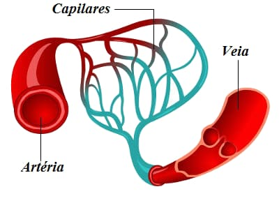
Artérias
São tubos cilindróides, elásticos, nos quais o sangue circula centrifugamente em relação ao coração.
No cadáver apresentam-se com a cor branca amarelada e no vivente nem sempre é fácil distinguí-las, pois sua coloração se confunde com a dos tecidos vizinhos e seus batimentos às vezes são notados apenas pela palpação.
Camadas:
A camada mais externa é conhecida como túnica externa, antigamente conhecida como túnica adventícia, e é composta de tecido conjuntivo.
A camada média é a túnica média ou média, que é composta de células musculares lisas e tecido elástico, que delimita a túnica adventícia pela limitante elástica externa.
A camada mais interna, que está em contato direto com o fluxo sanguíneo, é a túnica íntima, normalmente chamada de íntima.
Essa camada é composta principalmente de células endoteliais e revestida pela limitante elástica interna.
A cavidade interna do vaso na qual o sangue flui é chamada de lúmen.
As paredes das artérias, ao contrário das paredes das veias, têm alguma resistência, fazendo com que, mesmo quando não contiverem sangue, elas mantenham a sua forma tubular, ou seja, elas não colabam.
Calibre:
Tendo em vista seu calibre, as artérias podem de um modo simplificado ser classificadas em artérias de grande, médio, pequeno calibre e arteríolas.
As de grande calibre têm diâmetro interno de 7mm (ex. aorta), as de médio calibre entre 2,5 a 7mm, as de pequeno entre 0,5 e 2,5mm e arteríolas com menos de 0,5mm de diâmetro interno.
Levando-se em conta a considerável espessura das paredes das arteríolas com relação à sua luz, existe o conceito de arteríola baseado neste fato.
A relação entre espessura da parede e luz da arteríola foi fixada por alguns autores na proporção média de 1:2.
As artérias possuem a camada média muscular mais espessa que as veias, por isso sua capacidade de pulsar.
Tipos de artérias:
As artérias de grande calibre são chamadas elásticas, as de médio calibre são as musculares e as mais finas são as arteríolas.
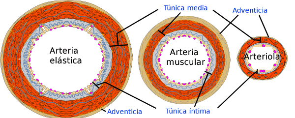
Veias
São tubos nos quais o sangue circula centripetamente em relação ao coração.
As veias fazem sequência aos capilares e transportam o sangue que já sofreu trocas com os tecidos, da periferia para o centro do sistema circulatório que é o coração.
No vivente, as veias superficiais têm coloração azul-escura porque suas finas paredes deixam transparecer o sangue que nelas circula.
Camadas:
Túnica interna: também conhecida como túnica íntima, é formada por tecido conjuntivo;
Túnica média: é a camada mais resistente e é formada por tecido muscular e tecido elástico;
Túnica externa: também conhecida como túnica adventícia é formada por um tecido conjuntivo flexível.
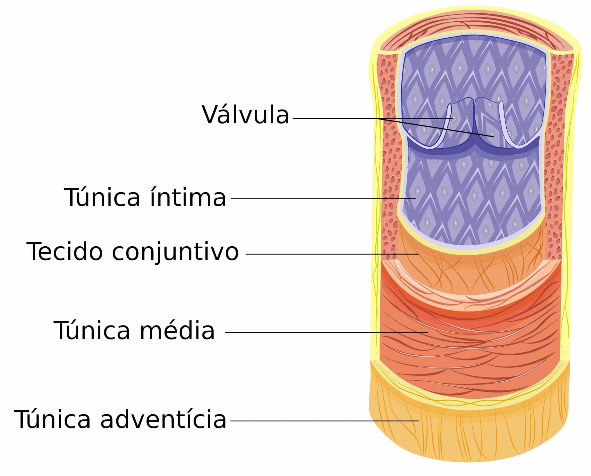
Forma:
É variável de acordo com a quantidade de sangue em seu interior.
Quando cheias de sangue, as veias são mais ou menos cilíndricas; quando pouco cheias ou mesmo vazias são achatadas, de secção elíptica.
Fortemente distendidas apresentam-se moniliformes ou nodosas devido à presença das válvulas.
Calibre:
Como para as artérias, as veias podem ser classificadas em veias de grande, médio e pequeno calibre e vênulas, estas últimas seguindo-se aos capilares.
As veias em geral têm maior calibre que as artérias correspondentes.
Em virtude da menor tensão do sangue no seu interior e de possuir paredes mais delgadas, as veias são muito depressíveis, podendo suas paredes entrar em contato (“colabamento“) e assim permanecer por algum tempo.
O poder de distensão das veias no sentido transversal é tão acentuado, que elas podem, segundo alguns autores, quintuplicar o seu diâmetro.
Existem veias profundas e superficiais, como o nome indica, as primeiras são encontradas em regiões mais profundas; enquanto as outras estão na superfície da pele, sendo facilmente visualizadas.
As veias mais finas são chamadas vênulas e fazem a comunicação entre vasos.
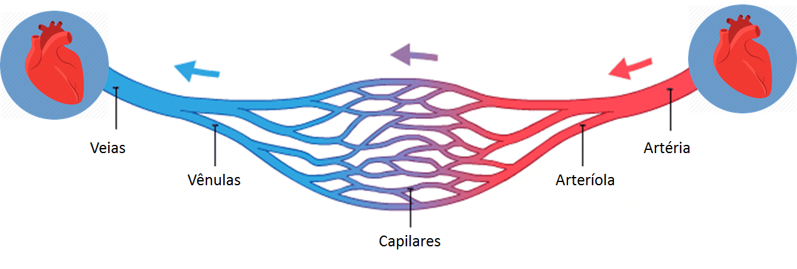
Anastomose
Significa ligação entre artérias, veias e nervos os quais estabelecem uma comunicação entre si.
A ligação entre duas artérias ocorre em ramos arteriais, nunca em troncos principais.
Às vezes duas artérias de pequeno calibre se anastomosam para formar um vaso mais calibroso.
Frequentemente a ligação se faz por longo percurso, por vasos finos, assegurando uma circulação colateral.
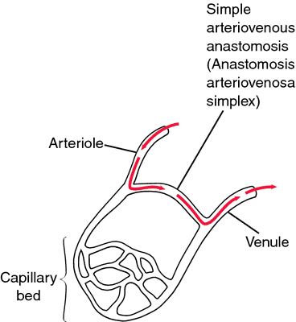
Coração
É um órgão muscular, oco, que funciona como uma bomba contrátil-propulsora.
O tecido muscular que forma o coração é de tipo especial — tecido muscular estriado cardíaco, e constitui sua camada média ou miocárdio.
Forrando internamente o miocárdio existe endotélio, o qual é contínuo com a camada íntima dos vasos que chegam ou saem do coração.
Esta camada interna recebe o nome de endocárdio; externamente ao miocárdio, há uma serosa revestindo-o, denominada epicárdio.
A cavidade do coração é subdividida em quatro câmaras (dois átrios e dois ventrículos)
Os ventrículos têm como função impulsionar o sangue para fora do coração, para os pulmões ou para o organismo, já os átrios são as câmaras responsáveis por receber o sangue do corpo.
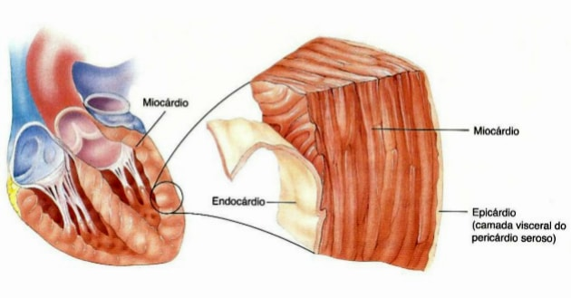
Pericárdio
É um saco fibro-seroso que envolve o coração, separando-o dos outros órgãos do mediastino e limitando sua expansão durante a diástole ventricular.
Consiste de uma camada externa fibrosa — pericárdio fibroso (parietal);
E de uma camada interna serosa — pericárdio seroso (visceral).
Este último possui uma lâmina parietal, aderente ao pericárdio fibroso e uma lâmina visceral, aderente ao miocárdio e também chamada epicárdio.
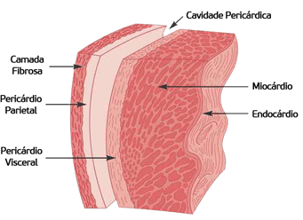
Entre as duas lâminas do pericárdio seroso existe uma cavidade virtual — cavidade do pericárdio, ocupada por camada líquida de espessura capilar, que permite o deslizamento de uma lâmina contra a outra durante as mudanças de volume do coração.
Forma
O coração tem a forma aproximada de um cone truncado, apresentando uma base, um ápice e faces (esternocostal, diafragmática e pulmonar).
A base do coração não tem uma delimitação nítida, isto porque corresponde à érea ocupada pelas raízes dos grandes vasos da base do coração, isto é, vasos através dos quais o sangue chega ou sai do coração.
{kind=link}
Localização
O coração fica situado na cavidade torácica, atrás do esterno, acima do músculo diafragma sobre o qual em parte repousa, no espaço compreendido entre os dois sacos pleurais (mediastino médio).
Sua maior porção se encontra à esquerda do plano mediano.
O coração fica disposto obliquamente, de tal forma que a base é medial, superior e a direita em relação ao ápice.
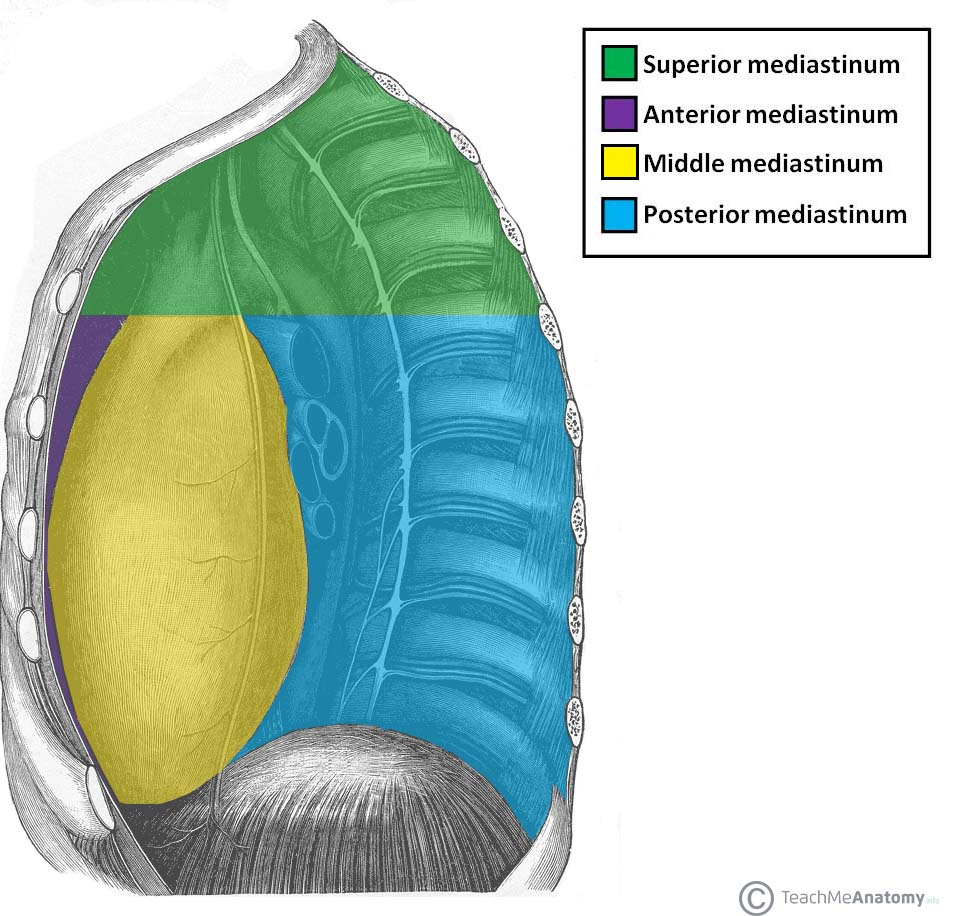
Morfologia interna
Quando as paredes do coração são abertas, verifica-se que a cavidade cardíaca apresenta septos, subdividindo-a em quatro câmaras.
A porção superior apresenta um septo sagital, o septo inter-atrial, que a divide em duas câmaras: átrios direito e esquerdo.
Cada átrio possui um apêndice, o qual visto na superfície externa do coração se assemelha a orelha de animal e recebe por isso o nome de aurícula (do latim auris, orelha).
A porção inferior apresenta também um septo sagital, o septo interventricular, que a divide em duas câmaras: ventrículos direito e esquerdo.
As cavidades cardíacas se comunicam apenas entre os mesmo lados, isso porque o lado esquerdo do coração trabalha com sangue arterial e o direito com sangue venoso.
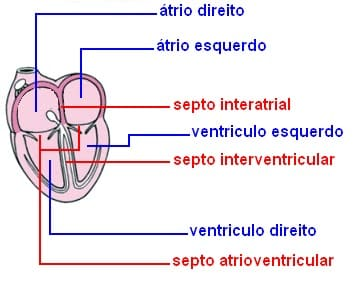
Os óstios atrioventriculares são providos de dispositivos que permitem a passagem do sangue somente do átrio para o ventrículo: são as valvas atrioventriculares direita e esquerda.
A valva é formada por uma lâmina de tecido conjuntivo denso, recoberta em ambas as faces pelo endocárdio.
Esta lâmina é descontínua, apresentando subdivisões incompletas, as quais recebem o nome de válvulas ou cúspides.
A valva átrio-ventricular direita possui três válvulas e é conhecida como valva tricúspide;
A valva atrioventricular esquerda apresenta duas válvulas e a chamam de valva bicúspide ou mitral.
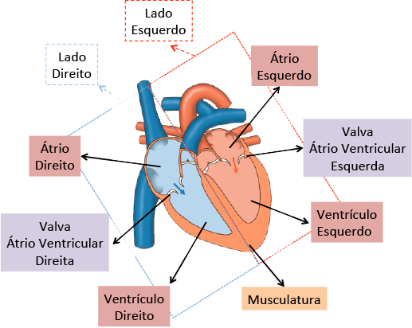
Vasos da base
Veias cavas superior e inferior: ambas chegam no átrio direito, a primeira trás o sangue da cabeça, pescoço e membros superiores e a segunda do tronco e membros inferiores.
Tronco pulmonar: é uma grande artéria que sai do ventrículo direito e logo se bifurca nas duas artérias pulmonares, o sangue que circula nesses vasos é venoso e dirige-se aos pulmões.
Veias pulmonares: duas direitas e duas esquerdas, são provenientes dos pulmões e chegam ao átrio esquerdo trazendo o sangue arterial.
A. Aorta: a artéria “mãe” de todas as outras, parte do ventrículo esquerdo e é responsável por distribuir o sangue para todo o organismo.
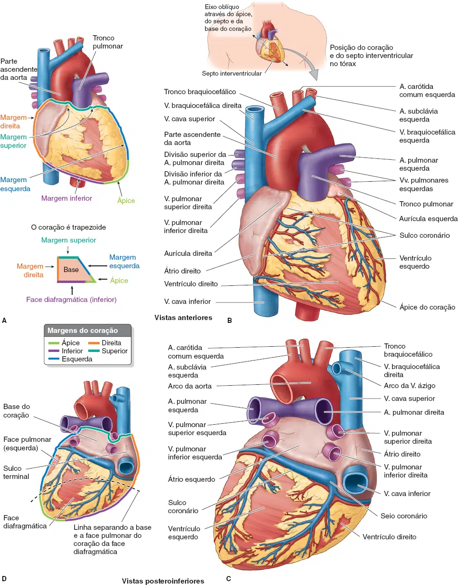
Tipos de circulação
Circulação pulmonar ou pequena circulação
Tem início no ventrículo direito, de onde o sangue é bombeado para a rede capilar dos pulmões.
Depois de sofrer a hematose, o sangue oxigenado retorna ao átrio esquerdo.
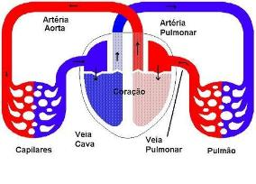
Circulação sistêmica ou grande circulação
Tem início no ventrículo esquerdo, de onde o sangue é bombeado para a rede capilar dos tecidos de todo o organismo.
Após as trocas, o sangue retorna pelas veias ao átrio direito.
Circulação colateral
Normalmente, existem anastomoses (comunicações) entre ramos de artérias ou de veias entre si.
Estas anastomoses são em maior ou menor número no feixe atrioventricular, dependendo da região do corpo.
Em condições normais, não há muita passagem de sangue através destas comunicações, mas no caso de haver uma obstrução (parcial ou total) de um vaso mais calibroso que participe da rede anastomótica, o sangue passa a circular ativamente por estas variantes, estabelecendo-se uma efetiva circulação colateral.
É provável que a circulação colateral possa estabelecer-se a partir de capilares, pela adição de tecidos “às suas paredes”, convertendo-se em artéria ou veia.
Pelo exposto, conclui-se que a circulação colateral é um mecanismo de defesa do organismo, para irrigar ou drenar determinado território quando há obstrução de artérias ou veias de relativo calibre.
Circulação portal
Neste tipo de circulação, uma veia interpõe-se entre duas redes de capilares, sem passar por um órgão intermediário.
Isto acontece na circulação portal-hepática, provida de uma rede capilar no intestino (onde há absorção dos alimentos) e outra rede de capilares sinusóides no fígado (onde ocorrem complexos processos metabólicos), ficando a veia porta interposta entre as duas redes.
Existe também um sistema portal na hipófise e nos glomérulos.
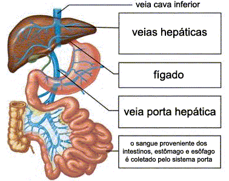
Sistema linfático
A maior parte do líquido que filtra dos capilares arteriais flui por entre as células e é finalmente reabsorvida pelas extremidades venosas dos capilares sanguíneos; mas cerca de um décimo do líquido passa, em vez disso, para os capilares linfáticos, retornando ao sangue pelo sistema linfático, e não pelos capilares venosos.
A diminuta quantidade de líquido que volta à circulação por meio dos vasos linfáticos é extremamente importante porque substâncias de alto peso molecular, tais como as proteínas, não podem ser reabsorvidas pelos capilares venosos mas podem passar para os capilares linfáticos quase que totalmente sem oposição.
A razão disto é a estrutura especial dos capilares linfáticos.
As figuras mostram as células endoteliais do capilar presas por filamentos de ancoração ao tecido conjuntivo circundante.
Nas junções entre as células endoteliais adjacentes, a borda de uma célula endotelial em geral se superpõe à borda da célula adjacente, de tal forma que a borda superposta fica livre para dobrar-se para dentro, formando, assim, uma diminuta válvula que se abre para o interior do capilar.
O líquido intersticial, juntamente com suas partículas suspensas, pode forçar a válvula a abrir-se e fluir diretamente para o capilar linfático.
Mas esse líquido tem dificuldade de sair do capilar após ter nele penetrado, porque qualquer refluxo vai fechar a válvula de aba.
Assim, os vasos linfáticos têm válvulas bem na extremidade dos capilares linfáticos terminais, bem como válvulas ao longo de seus vasos maiores até o ponto em que eles desembocam na circulação sanguínea.

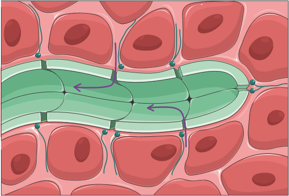